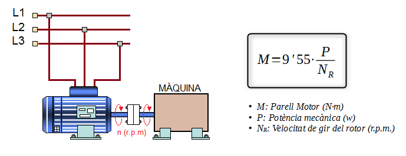
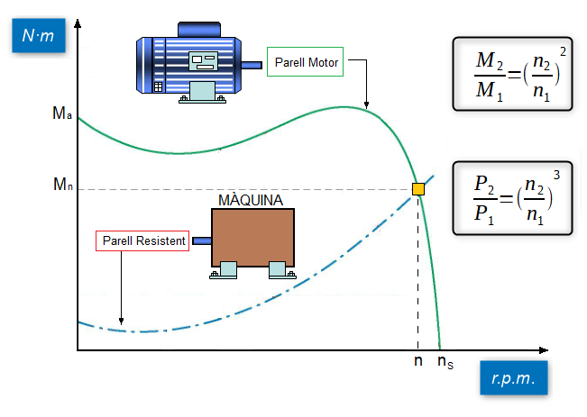
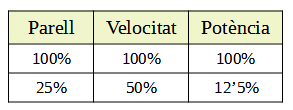
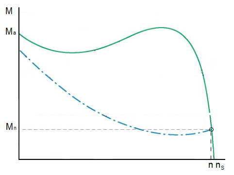

Les càrregues que acciona un motor elèctric poden ser classificades en funció del seu parell resistent:

- Parell Constant
- Parell Variable
- Potència constant
Les càrregues que acciona un motor elèctric poden ser classificades en funció del seu parell resistent:


Les càrregues de parell constant requereixen la mateixa quantitat de parell a baixes velocitats que a altes velocitats. El parell es manté constant en tot el rang de velocitats i la Potència (P) augmenta i disminueix en proporció directa a la velocitat. Per exemple, si la velocitat del motor augmenta en un 50%, la potència també haurà d'augmentar en un 50% si volem que el parell es mantingue constant.
Les càrregues de parell constant inclouen la majoria de les bombes i compressors alternatius i de desplaçament positiu, les cintes transportadores i els aparells elevadors com ascensors i grues.

Les càrregues de parell variable requereixen un parell més xicotet a baixes velocitats que a altes velocitats. A més, en aquest tipus de càrregues el Parell requerit varia amb el quadrat de la velocitat i la potència requerida varia amb el cub de la velocitat.
La taula següent ens indica que succeeix amb el Parell i la Potència si la velocitat del motor disminueix a la meitat:

Les càrregues de parell variable inclouen a la majoria de les bombes centrífugues i axials, ventiladors i molts mescladors i agitadors.
Càrregues a Potència Constant

Com es pot veure en el gràfic anterior el parell de la càrrega disminueix a mesura que la velocitat del motor augmenta. Exemples de càrregues que treballen a potència constant són:
Les càrregues de cavalls de força constants requereixen un parell elevat a baixes velocitats i un parell baix a altes velocitats, cosa que significa cavalls de força constants a qualsevol velocitat. Les càrregues de potència constant inclouen *amoladoras, *bobinadoras i torns. Per a càrregues de cavalls de força constants, la càrrega de parell és una funció de la velocitat fins al 100% de la velocitat de funcionament. A mesura que disminueix la velocitat de l'operació, el parell augmenta de manera que la potència requerida roman essencialment constant.
Com es pot veure en el gràfic anterior el parell de la càrrega disminueix a mesura que la velocitat del motor augmenta. Exemples de càrregues que treballen a potència constant són:
Obra publicada con Licencia Creative Commons Reconocimiento Compartir igual 4.0